ファイル
上書き保存
Ctrl+S
開く
名前を付けて保存
Ctrl+Shift+S
Parameter…
ドキュメント設定
アプリケーション設定
編集
元に戻す
Ctrl+Z
やり直す
Ctrl+Y
削除
Del
表示
Geometry ID
拘束状態表示
Space
Geometry
点
線
中心線
円中心十字線
矩形
長穴
円
円弧
3点円弧
スプライン
スケッチ投影
同期インスタンス
ミラー
直線パターン
トリム
ハッチング
フィレット
オフセット
ブロック
ブロック作成
ブロック定義
Constraint
拘束ツールはツールバーから選択します
Annotation
引出線
自由テキスト
画像を読み込み
ヘルプ
Jot2D unified canvas
実行中コミット
取得中…
スケッチ投影
スケッチツリー
＋
子＋
ブロックエディタ
キャンセル
完了
ドキュメント設定
×
一般外観
補助線外観
寸法外観
Parameter
×
名前空間
Parameter
追加
名前
値 / 数式
評価値
寸法
名前
種類／所属
値 / 数式
評価値
アプリケーション設定
×
General
言語
日本語
English
表示テーマ
ライト
ダーク
アプリケーション全体の設定をドキュメント設定から分離して管理します。
ブロック定義
×
カラーパレット
×
標準色
このファイルで使用中の色
任意の色
×